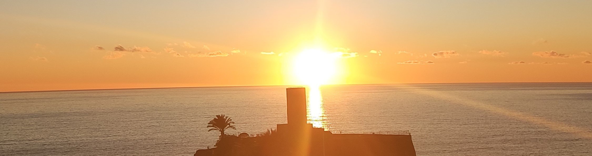

Vernazza sustains a diverse economy rooted in fishing, agriculture, and tourism. Governed by the Cinque Terre National Park, its economic fabric intertwines tradition and modernity. Fishing remains intrinsic to its identity, while terraced vineyards yield prized wines.


Tourism, drawn by its coastal charm and historic allure, fuels local businesses and accommodations. Vernazza's governance aligns with the park's ethos, focusing on sustainable growth, cultural preservation, and environmental conservation. This collaborative approach ensures economic vibrancy while safeguarding the village's heritage against the backdrop of breath-taking Ligurian coastal vistas.
Economy and Governance